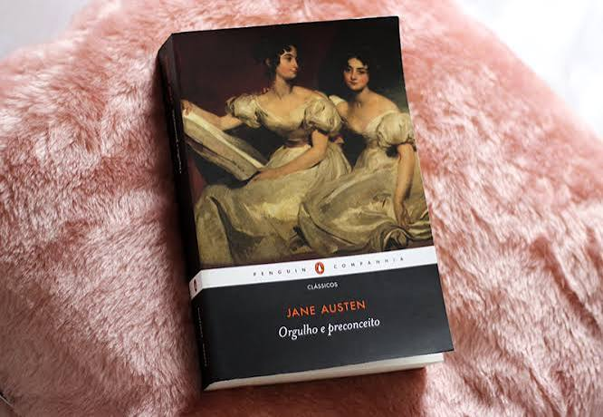

Para refletir
Clássicos
Obras que continuam relevantes e atravessam gerações.
Entre Páginas
um universo em cada livroLeia, descubra, imagine.
BEM-VINDA(O) AO PORTAL
Explore gêneros, conheça autores, descubra obras e organize suas próximas leituras em um só lugar.
01 / DESCOBERTA
Uma seleção organizada para facilitar sua próxima descoberta literária.

Obras que continuam relevantes e atravessam gerações.
Universos extraordinários, magia e aventuras.
Relações, encontros e histórias emocionantes.
Suspense, enigmas e reviravoltas inesperadas.
02 / CATEGORIAS
Os gêneros ajudam a escolher uma leitura de acordo com o momento e o interesse.
Magia, criaturas, reinos e mundos imaginários.
Histórias sobre afeto, relações e sentimentos.
Ciência, tecnologia e futuros possíveis.
Tensão, mistérios e descobertas.
Trajetórias e experiências de vida.
Reflexões e ferramentas para a vida.
03 / QUEM ESCREVE
Alguns nomes importantes para ampliar seu repertório literário.
Autor brasileiro conhecido por sua ironia e análise psicológica.
Escritora brasileira marcada pela introspecção e linguagem singular.
Romancista inglesa que retratou relações e costumes sociais.
Escritor inglês conhecido por suas narrativas críticas e políticas.
04 / EM DESTAQUE
Uma tabela de referência para comparar algumas obras conhecidas.
| Livro | Autor(a) | Gênero | Idioma original | Páginas aprox. | Perfil |
|---|---|---|---|---|---|
| Dom Casmurro | Machado de Assis | Romance | Português | 256 | Reflexivo |
| 1984 | George Orwell | Distopia | Inglês | 328 | Crítico |
| Orgulho e Preconceito | Jane Austen | Romance | Inglês | 424 | Clássico |
| A Hora da Estrela | Clarice Lispector | Ficção | Português | 88 | Introspectivo |
| O Hobbit | J. R. R. Tolkien | Fantasia | Inglês | 310 | Aventura |
| Frankenstein | Mary Shelley | Terror | Inglês | 280 | Reflexivo |
| O Pequeno Príncipe | Antoine de Saint-Exupéry | Fábula | Francês | 96 | Poético |
| Capitães da Areia | Jorge Amado | Romance | Português | 280 | Social |
| O Nome da Rosa | Umberto Eco | Suspense | Italiano | 592 | Investigativo |
| Persépolis | Marjane Satrapi | Graphic novel | Francês | 352 | Biográfico |
05 / INTERAÇÃO A
Alterne entre as abas e adicione uma sugestão à prateleira de novidades.
06 / INTERAÇÃO B
Pesquise uma dúvida ou abra uma pergunta para visualizar a resposta.
Comece com poucos minutos por dia, escolha um tema de interesse e mantenha um horário possível na rotina.
Não existe uma quantidade obrigatória. O ideal é estabelecer uma meta realista e constante.
Considere seus interesses atuais, leia sinopses e experimente gêneros diferentes.
Sim. Se a obra não está funcionando para você, pode pausá-la e tentar outra leitura.
Faça anotações, marque trechos e escreva um pequeno resumo ao terminar cada capítulo.
Os dois formatos oferecem boas experiências. A escolha depende de conforto, acesso e preferência pessoal.
É uma obra que mantém relevância cultural, histórica ou artística ao longo do tempo.
É um número internacional que identifica livros e suas edições de forma padronizada.
Mantenha-os longe de umidade, luz solar direta, poeira excessiva e locais com grandes variações de temperatura.
É uma coleção organizada de conteúdos digitais que podem ser consultados por dispositivos eletrônicos.
Nenhuma pergunta encontrada. Tente outra palavra.
↑ Voltar ao topo07 / Lista de leituras
Monte sua própria lista, acompanhe seu progresso e organize suas próximas leituras.
Livros: 0
08 / PARTICIPE
Preencha seus dados e conte um pouco sobre seus hábitos de leitura.
09 / SOBRE O PROJETO
Entre Páginas é um projeto acadêmico que reúne informação, organização e interação em torno do universo dos livros.
Incentivar a leitura e facilitar a descoberta de obras, gêneros e autores.
Estudantes universitárias apaixonadas por tecnologia
Desenvolvido por Raissa, Gabi e Thais • Trabalho Prático Integrador de Front End • 2026
↑ Voltar ao topo